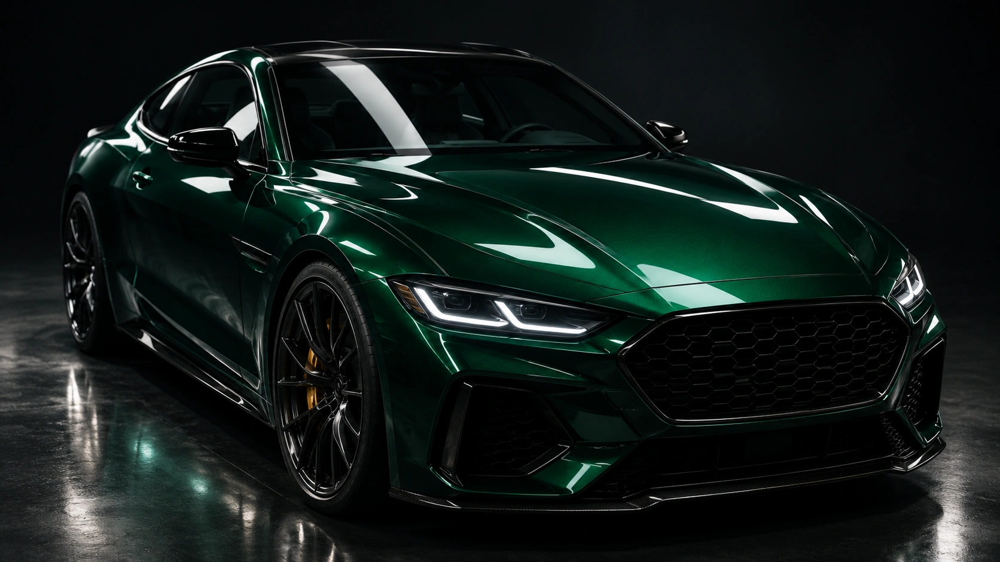
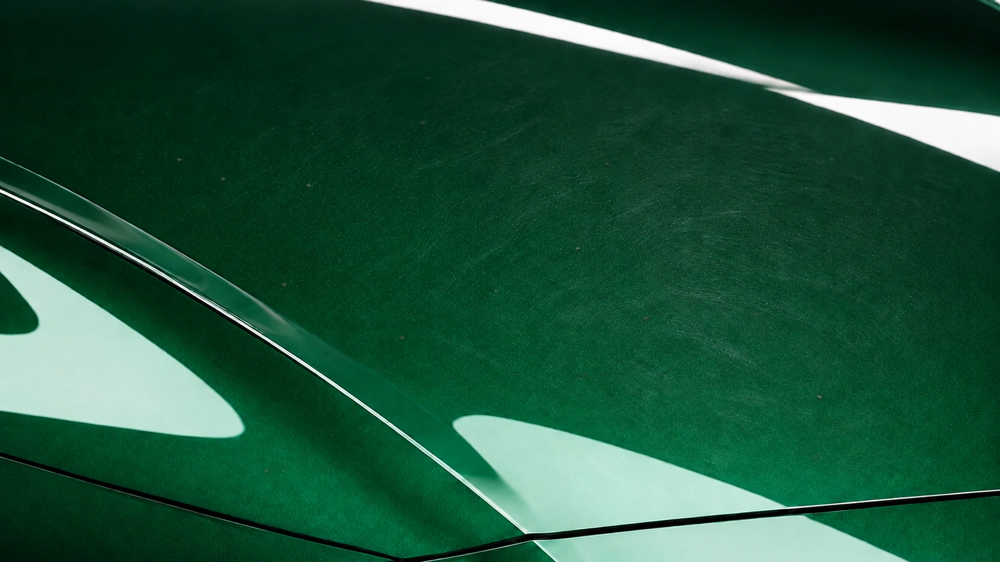
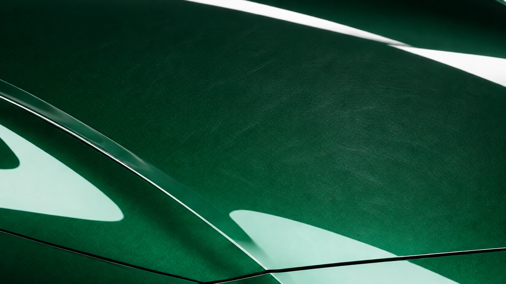
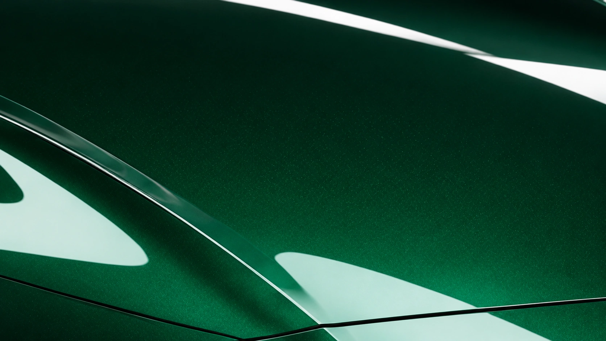
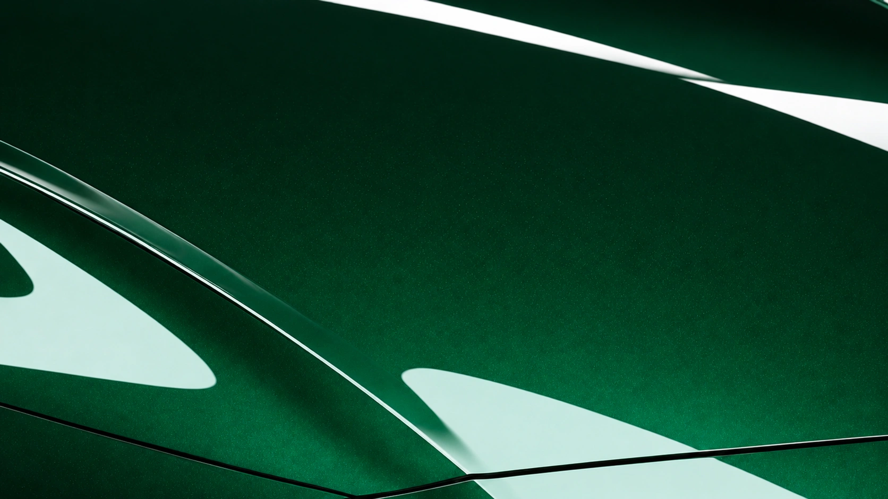
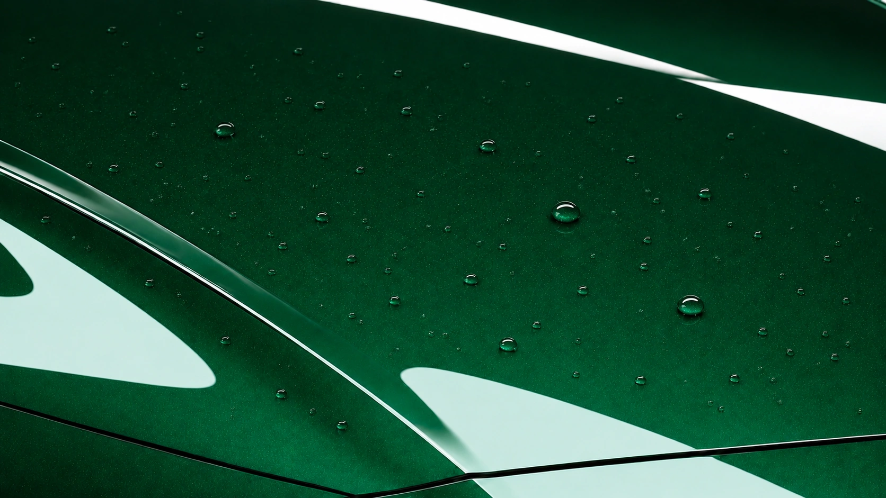

Polished & Pristine
Ceramic coating.
Deep gloss.
Autosmart Matrix Blue / Three-year ceramic coating
Deep gloss.
A highly reflective, mirror-like finish.
AI-generated imagery · Illustrative process
Scroll to exploreOne surface. Every stage.

A / THE PAINT PROCESS
Before preparation.
Fine wash swirls scatter the light. Small bonded contaminants interrupt the emerald finish.

B / THE PAINT PROCESS
After decontamination & clay.
Washing, chemical decontamination and clay remove bonded contamination. Clay does not remove swirl marks.

C / THE PAINT PROCESS
After machine polishing.
Machine polishing reduces light swirls and sharpens reflections. Deeper defects may remain.

D / THE PAINT PROCESS
After ceramic coating.
After a panel wipe, Autosmart Matrix Blue is applied and levelled. Rich gloss, on properly prepared paint.

E / THE PAINT PROCESS
Hydrophobic protection.
After curing, water gathers into tight beads on the hydrophobic surface. Protection that makes maintenance easier.
Ceramic Coating · Darlington & surrounding areas
Autosmart
Matrix Blue.
From £250 / three-year ceramic coating
Prices depend on the vehicle and condition. Approximately a full day's work.
Get a ceramic coating quoteIncluded in the service
- 01 Full exterior decontamination
- 02 Single-stage machine paint enhancement
- 03 Panel wipe and coating preparation
- 04 Exterior glass and wheel faces
Requires suitable dry weather and curing conditions.
A 20% booking deposit applies.
Genuine photographs of our work
Real vehicles.
Careful work.
Detailing results from our existing gallery. These photographs are not AI-generated.